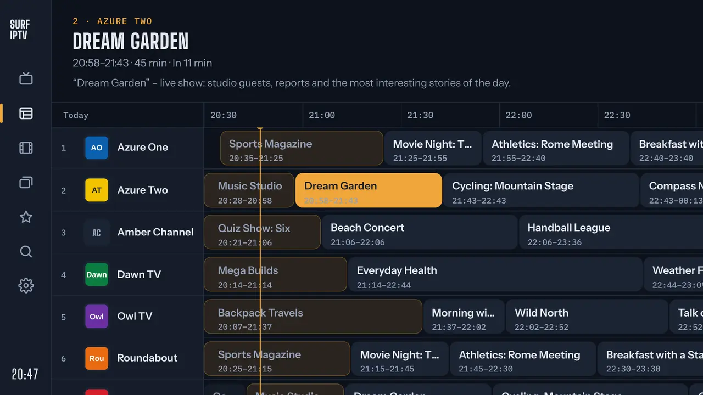
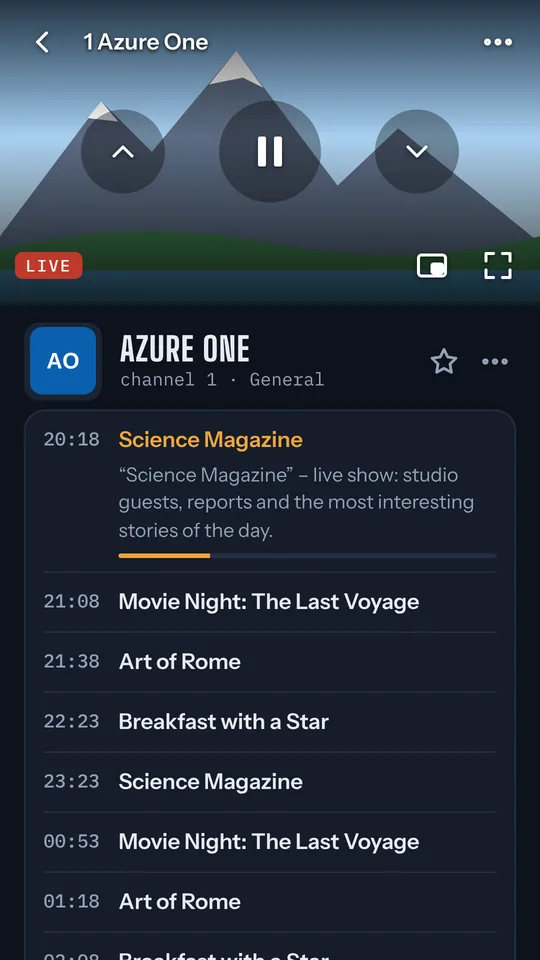
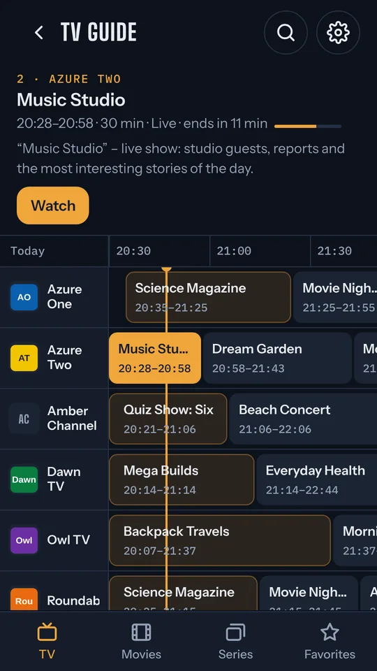
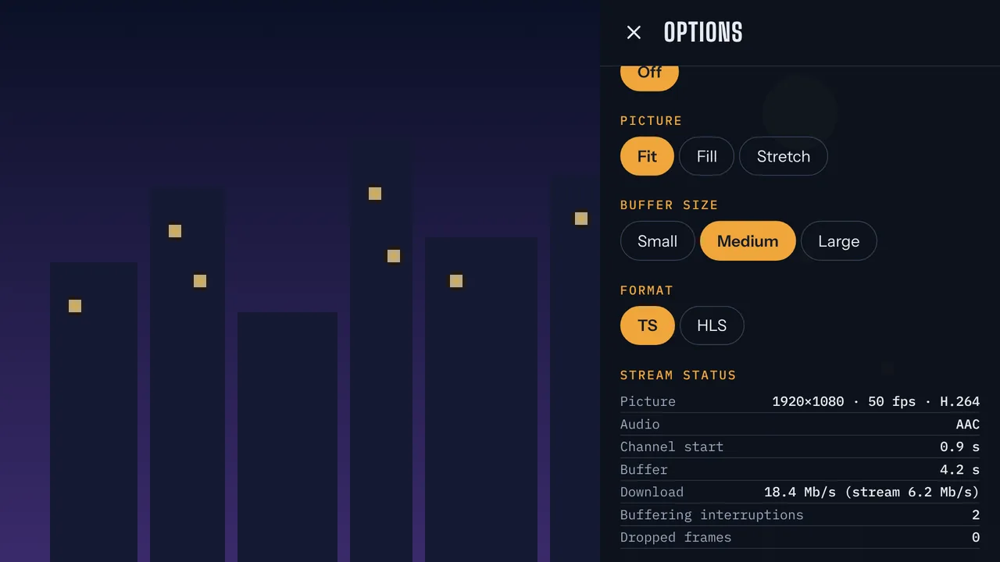
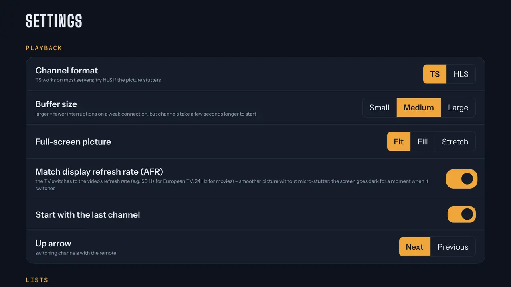
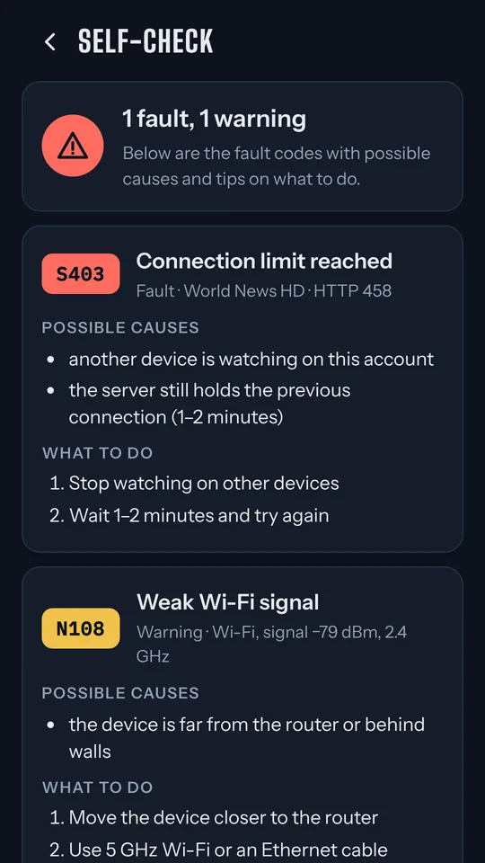
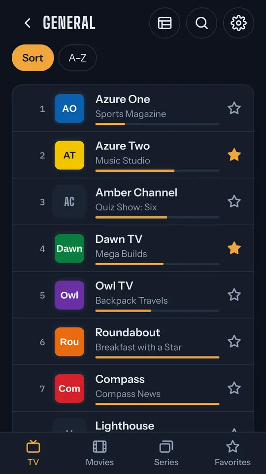
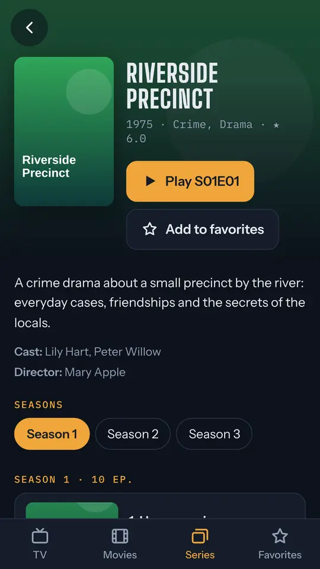
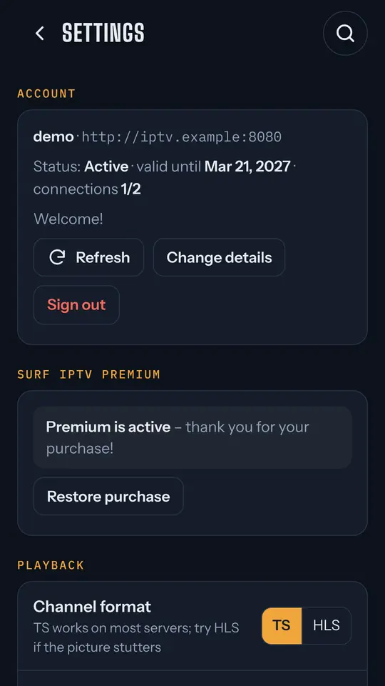
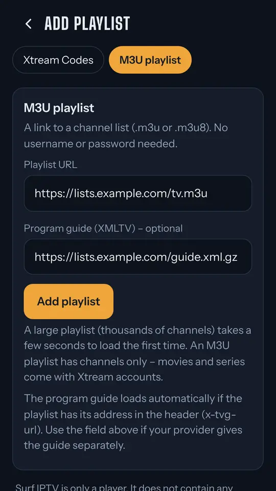

Phone · Tablet · Google TV
Your IPTV
on phone and TV
A clean, ad-free player for your own M3U playlists and Xtream Codes API. Touch controls on your phone, full remote control on your TV – one app for both.


Surf IPTV does not contain any channels, playlists, videos or stream addresses. It is a media player only and is not affiliated with any TV channel, content owner or IPTV provider. You add your own sources and you are responsible for having the right to watch them.
Free: live TV from your sources
Everything you need to watch the streams you already have, with no ads of any kind.
M3U and Xtream Codes API
Paste a playlist link – no login needed – or enter the Xtream details from your service. Then browse categories, favourites, recently watched and search.
TV guide
A real program grid across your channels, up to 24 hours ahead, from Xtream EPG or XMLTV (.xml.gz too).
All your playlists
Name your providers and M3U playlists and switch with one tap – each keeps its own favourites and history. The first playlist is free, more come with Premium.
Built-in self-check
Like a car diagnostic scanner: it tests your connection, server, account and a stream sample, and explains every problem with a fault code and clear tips.
Smooth playback
HLS and MPEG-TS streams on Media3 / ExoPlayer, audio track and subtitle choice, and picture-in-picture on phones.
Made for the remote
On Google TV and Android TV every screen works with the D-pad, no mouse needed.

A TV guide that feels like TV
See what's on across all your channels at a glance, on the phone and on the big screen.
- Channels in rows, time across, with a line showing the current time
- Up to 24 hours ahead, with the description of every program
- On TV the remote keeps the time as you move between channels
- Open a channel straight from the guide, or catch up on a program that has ended when your source keeps an archive
See what your stream is doing
Press ⋯ while watching to open the options. Stream status updates every second and shows whether a problem comes from your connection or from the source.
- Resolution, frame rate and video codec
- Audio format and buffer ahead, in seconds
- Download speed next to the stream's own bitrate
- Buffering interruptions and dropped frames
Buffer size, picture fit and stream format (TS or HLS) can be changed right there, without leaving the channel.


Settings that matter
Tune playback to your connection and your TV, and keep only the lists you actually watch.
- Stream format (TS or HLS) and buffer size
- Picture: fit, fill or stretch
- Start with the last channel and choose what the arrow keys do
- Hide categories you never watch
- Light, dark or automatic theme and picture-in-picture on phones
A diagnostic scanner built in
When something doesn't play, Surf IPTV tells you why. Like a car's diagnostic scanner, every problem gets a short fault code, its likely causes and clear tips on what to do.
- One tap checks the internet, server name (DNS), connection, account, device clock, lists, TV guide and a sample of a real stream
- Measures how fast the stream starts and how quickly data arrives
- Fault codes on the player's error screen, with a Why? button
- The playback log notes each problem with its code and a tip
- Share the report with your provider – your password is never included

Premium
Try everything for 3 days after installing, then unlock it once. One-time purchase, no subscription.
- Movies and series from your Xtream source, with posters, resume and next episode
- Catch-up: start a show over or watch recent programs, when your source has an archive
- Multiple playlists and accounts, each with its own favourites – switch with one tap
- Auto frame rate on TV (50 / 24 Hz) for smooth motion
- Backup and restore of your playlists, favourites and settings
- New Premium features in future updates at no extra cost

Screenshots
All channels, programs and posters shown here are made up for the screenshots.




No ads
No banners, no pop-ups and no videos before your streams. The app contains no advertising or analytics libraries.
Private by design
No account with us and no tracking. Your playlist addresses and login details stay on your device, and the app connects only to the servers you add. Privacy policy